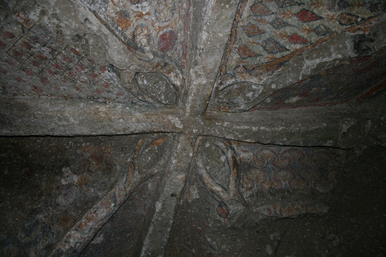

<ons-page>
  <ons-toolbar style="background-color: #000000">
    <div class="left" style="width: 50px">
      <ons-toolbar-button onclick="fn.open()">
        <ons-icon icon="fa-info" size="40px"></ons-icon>
      </ons-toolbar-button>
    </div>
    <div class="center"></div>
    <div class="right" style="width: 50px">
      <ons-toolbar-button icon="fa-user" size="40px" onclick="fn.gotoPage('accesso.html')"></ons-toolbar-button>
    </div>
  </ons-toolbar>
    <!--div class="navigation-bar">
      <div id="wrapper">
        <ons-button disabled="true"><ons-icon icon="fa-filter"></ons-icon>&nbsp;&nbsp;Filtri</ons-button>
        <div style="width: 180px"></div>
        <ons-button disabled="true"><ons-icon icon="fa-list-ul"></ons-icon>&nbsp;&nbsp;Elenco</ons-button>
      </div>
    </div-->

    <div id="mapid" style="width: 100%; height: 94%;"></div>
    <script>

    	var street = L.tileLayer('https://api.tiles.mapbox.com/v4/{id}/{z}/{x}/{y}.png?access_token=pk.eyJ1IjoibWFwYm94IiwiYSI6ImNpejY4NXVycTA2emYycXBndHRqcmZ3N3gifQ.rJcFIG214AriISLbB6B5aw', {
    		maxZoom: 19,
    		//attribution: 'Map data &copy; <a href="https://www.openstreetmap.org/">OpenStreetMap</a> contributors',
    		id: 'mapbox.streets'
    	});

      var altimetria = L.tileLayer('https://api.tiles.mapbox.com/v4/{id}/{z}/{x}/{y}.png?access_token=pk.eyJ1IjoibWFwYm94IiwiYSI6ImNpejY4NXVycTA2emYycXBndHRqcmZ3N3gifQ.rJcFIG214AriISLbB6B5aw', {
    		maxZoom: 19,
    		//attribution: 'Map data &copy; <a href="https://www.openstreetmap.org/">OpenStreetMap</a> contributors',
    		id: 'mapbox.outdoors'
    	});

      var satellite = L.tileLayer('https://api.tiles.mapbox.com/v4/{id}/{z}/{x}/{y}.png?access_token=pk.eyJ1IjoibWFwYm94IiwiYSI6ImNpejY4NXVycTA2emYycXBndHRqcmZ3N3gifQ.rJcFIG214AriISLbB6B5aw', {
    		maxZoom: 19,
    		//attribution: 'Map data &copy; <a href="https://www.openstreetmap.org/">OpenStreetMap</a> contributors',
    		id: 'mapbox.satellite'
    	});

      var options = {
        icon: 'fas fa-hiking',
        /*iconShape: 'marker',*/
        borderColor: '#000000',
        borderWidth: 2,
        iconSize: [45, 45],
        popupAnchor: [10, -10],
        innerIconStyle: 'font-size:30px;padding-top:4px;color: #000000'
      };

      var percorsi = L.layerGroup();

      L.marker([42.511,11.625], {
        icon: L.BeautifyIcon.icon(options),
        draggable: false
      }).bindPopup("<b>Eremo di Poggio Conte</b><br /><br/><div id='trail-rating'><ul class='ratings'><li class='average'><span id='rating' class='rating star3_5'>&nbsp;</span></li></ul></div><br/><div class=\"divTable\"><div class=\"divTableRow\"><div class=\"divTableHead1\">Facile</div><div class=\"divTableHead2\">2,5 Km</div><div class=\"divTableHead3\">2 h</div></div></div><br/><a href='#' onclick=\"fn.load('scheda.html')\">Vai alla scheda</a>").addTo(percorsi);

      L.marker([42.481448, 12.264270], {
        icon: L.BeautifyIcon.icon(options),
        draggable: false
      }).bindPopup("<b>Piramide di Bomarzo</b><br /><br/><div id='trail-rating'><ul class='ratings'><li class='average'><span id='rating' class='rating star4_5'>&nbsp;</span></li></ul></div><div >Facile</div><br/><a href='#' onclick=\"fn.load('scheda.html')\">Vai alla scheda</a>").addTo(percorsi);

      var mymap = L.map('mapid', {
    		center: [42.585280, 11.933396],
    		zoom: 9,
    		layers: [street, percorsi]
    	});

      /*L.easyButton('fa-globe', function(btn, map){
          fn.load('download.html');
          //ons.notification.confirm('Confirm!')
      }).addTo( mymap );*/


      var baseLayers = {
    		"Standard": street,
        "Altimetria": altimetria,
        "Satellite": satellite
    	};

    	var overlays = {
    		"Percorsi": percorsi
    	};

	    L.control.layers(baseLayers, overlays).addTo(mymap);
  </script>

</ons-page>
